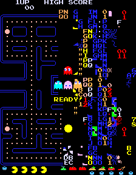

第５章：分割画面の解読
こんなふうに 世界は終わる
こんなふうに 世界は終わる
世界の終りは
爆発音ではなく すすり泣く声で
T. S. エリオット
永遠の果てに
Pac-Manは当初から、意図的に終わりのないゲームでした。ナムコの開発者は難易度を上昇させていけば誰も遊び続けられないだろうと思い違いをしていたのです。もちろんPac-Manのリリースから数年内にはレベル21以降のすべてが同一であるとプレイヤーは気づいていました。
この事実を利用したパターンが次々と生み出され、レベル20を超えられるプレイヤーにとってゲームは、集中力を切らしてミスを犯す前にどれだけの得点を積み上げられるのかを試す持久力テストと化しました。ハイスコアは数百万に急上昇し、ほとんどのプレイヤーはゲームが永久に続くものと単純に受け止めました。
最終的に、一部の高度なスキルを持つプレイヤーがレベル255までの連続クリアを達成し（300万点以上のスコアを獲得し、到達するのに数時間かかりましたが）、レベル256で彼らを待っているサプライズを見つけました。ナムコの開発者でさえ誰も知らなかったサプライズです。
レベル256では迷路の左半分は正しく表示されますが、右半分はランダムに色づけされた文字や数字、シンボルがごちゃ混ぜになっています。 画面右下のボーナスカウンターが機能不全を起こしていることにも注目してください。
迷路の左側は正常に描かれますが、右側は別です。プレイヤー/ゴーストの双方が画面の右半分へ行けますが、元々あった迷路の壁は適用されなくなります。
その代わりに、プレイヤーには目視できない入り組んだ一連の空き地、トンネル、一方通行の交差点、孤立した壁を通り抜けるために、熱心な４体のゴーストに追われながらパックマンを導く必要があります。
そもそもなぜこの壊れたラウンドが発生するのでしょうか？ 元凶は画面の下端に沿ってボーナスシンボルを描く責任のあるルーチンです。レベル256に達すると内部レベルカウンターが255にインクリメントされ（レベルカウンターは1ではなく0から始まります）、ボーナスシンボルを描画するためのルーチンが呼び出されます。
このルーチンは現在のレベルカウンタ値（255）をCPUレジスタにロードし、そのレジスタを１つインクリメントします。 残念ながら255はZ-80 CPUレジスタのサイズである１バイトに収まる最大数であるため、値がインクリメントされるとオーバーフローは破棄され、期待値の256ではなく0がレジスタに残ります。このゼロ値はその値が７未満であるため、これが初期レベルであるとルーチンに信じ込ませます。
ルーチンは混乱したレジスタをカウンタとしてボーナスシンボルの描画を開始します。すべての描画ループの終わりにレジスタは１ずつ減少しそれが0であるか確認します（ルーチンがシンボルの描画を停止するための信号）。レジスタには開始時すでに0が含まれているため、最初のデクリメントは値を255にロールバックします。レジスタが再び0になるまでレジスタのデクリメントとシンボルの描画が続き、ループは合計256回実行されます。
すなわち、ボーナスシンボルのテーブルをこえた範囲外のメモリ位置が、ビデオメモリの増加させる位置で画面に描画されるということです。この半壊したラウンドはプレイヤーによって“split screen（分割画面）”と名づけられ、開発者はこれを“キルスクリーン”と呼んでいます。
Don Hodges氏のサイトには、このバグのソースコードと修正案を含む詳細な分析記事があります：
PAC MAN'S SPLIT SCREEN LEVEL ANALYZED AND FIXED
遊んでみる
（リンク先は拡大画像）
画面の左半分に114個、右半分に９個のドット、そしてボーナスのカギが１つあり、合計6,310ポイントを獲得できますが、これらをすべて獲得しても何も起こりません。ゲームは244個のドットを食べつくすまで現在のラウンドを完了したとは見なさないので、あとは飢えたゴーストにパックマンを差し出すしかありません。
興味深いことに、ライフが失われるたびに画面の右半分にある９個のドットがリセットされて再び食べれるため、ライフひとつにつき90ポイントが追加されます。最良のシナリオ（残りライフ５個）での6,760ポイントが獲得可能な最高スコアになりますが、収集できるドットは168個しかなく——次のレベルに進むには不十分なため——ここで手詰りとなります。もはや、貪る小さいドットも精力剤もありません。
パックマンを待っている最終的な勝利はなく、ゴーストがうろつく空虚な半分の迷路だけです。結局のところゲームには終わりがありますが、愉快なものでも興奮するものでもありません。
画面右半分にある９個のドットのうち４個は見えませんが、食べれば音は鳴ります。前述の画像は９個あるドットの位置を示しています。ドット１、５、８、９は不可視で残りは見えますが、数個は通常の色と異なります。
このレベルに到達した人はふと思い至ります：ゴーストをどうにかして画面右側を安全にマッピングする方法はないのかと。そして試行錯誤の結果、ゴーストが画面右端に近づくとそこで“罠にかかる”ことが発見されました。
罠にかかったゴーストは上下移動のみ可能で、左右移動ができなくなります。熟練プレイヤーはドットの回収に専念するために画面右端へゴーストを誘導し、邪魔されずに迷路の右半分を探索します。
ゴーストを罠にはめる方法は多くあります。３体の重要なゴーストをはめる最も簡単な方法のひとつは、次の画像のとおりです。黄色い線はラウンド開始から右下のスポットまでパックマンを導くパスを示しています。
（リンク先は拡大画像）
正確な手順は： まず青い“Ｎ”まで右へ進み、次に下にある青い“Ｆ”まで進み、そして右にある黄色い“Ｂ”まで進み、最後に再び下へ向かいます。適切に実行されるとパックマンは最後のターンが行われた直後に見えない壁にぶつかるので、しばらく待ちます。
アカベエが最初にかかり、その数秒後にピンキーが続きます。アオスケは次の縄張モードが始まるまでは自由ですが、やがて右端に近づいて３体もろとも閉じ込められます。
グズタは逃亡中ですが脅威ではありません。彼はパックマンが近づくと自身の縄張へ向かうので（第４章）、ドットの回収はわりと容易です。迷路の左下はグズタの逃げ場がなく、危険性が高まるので注意が必要です。
この方法を実際に見るには、以下のYouTube動画を参照してください。
信じようが信じまいが
Pac-Man ROMの一部のバージョンには“ラックテスト”機能が搭載されており、筺体の所有者であれば好きな時にいつでも次のレベルへ進むことができます。今のところレベル256を正当に突破する唯一の知られた方法は、これらマシン内のラックテストスイッチを使用することです。
その結果、ゲームは最初の盤面にループバックしますが、スコアはそのままで、ゴーストたちはレベル21以降のように行動します。MAMEエミュレータで使用できるPac-Man ROMの多くにはこのラックテスト機能もあり、アーケード版を持っていない人でも分割画面の以降にすばやくアクセスできます。
何十年ものあいだ世界中のPac-Man愛好家は、前述のラックテストを使用せずにレベル256を突破してプレイし続けられる“秘密のトリック”のささやきを耳にしてきました。いくらかのプレイヤーはこのPac-Manの聖杯を何年にもわたって獲得したと自慢していますが、彼らの主張のとおり再現できた人は誰もいません。
このトピックはアーケードゲーム･コミュニティの上層部で非常に熱く議論されたため、不可能だと確信していたビリー･ミッチェルは１年にわったてチャレンジを開き、レベル256を正当に超えられたことを証明できた最初のプレイヤーに10万ドルの賞金を提供しました。しかし、この賞金は請求されませんでした。
レベル256を突破する方法の反証が挙げられても噂はいまだ根強く、オンラインのクラシックゲームフォーラムで時おり見かけますが、誰も議論の余地のない証拠でその言葉を裏づけることができていません。正当に突破した人がなぜミッチェル氏に賞金を要求しなかったのか、想像しがたいことです。
それでも時おりささやき声が聞こえます。おそらくは、サンタクロースやイースターバニーの可能性を信じたい人とそうではない人がいるように、単純に人として自然なことなのでしょう。もしかしたら、数十年前のアミューズメント機器の秘密を彼（または彼女）自身の計り知れない理由で差し控えている中年のPac-Man中毒者がそこにいるかもしれません。こんなことがあるとは？と思ったらあなたの判断にお任せします。